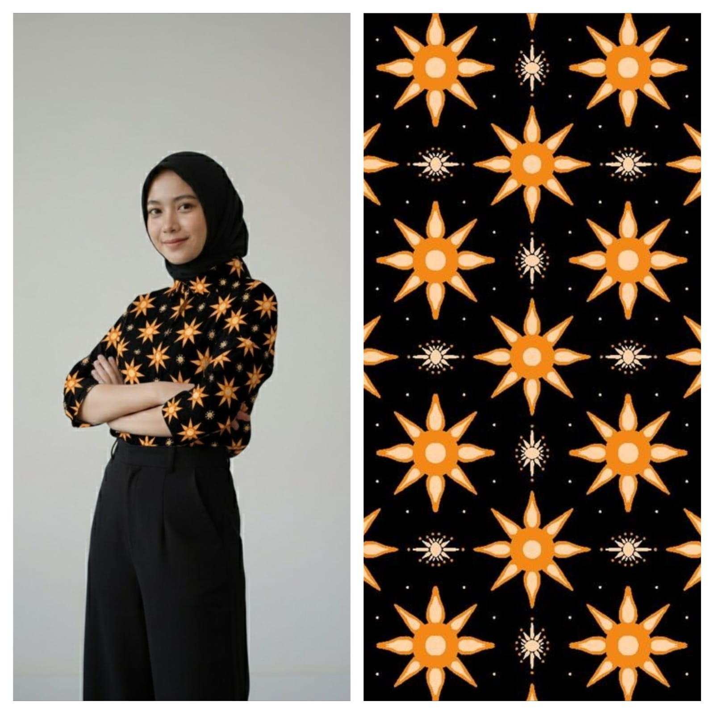
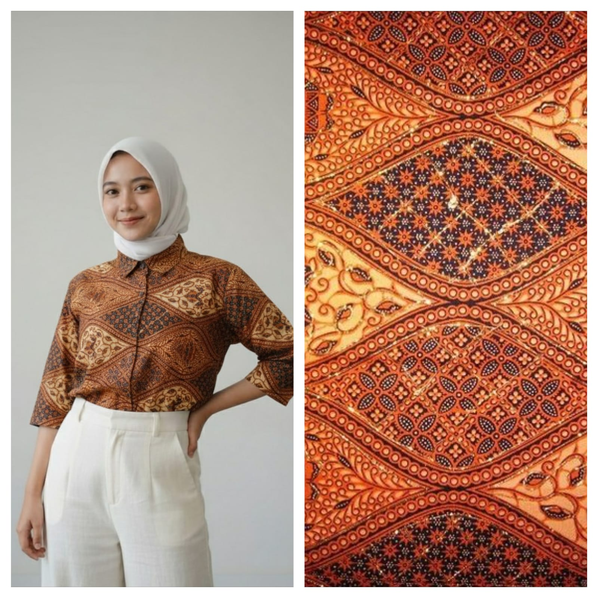
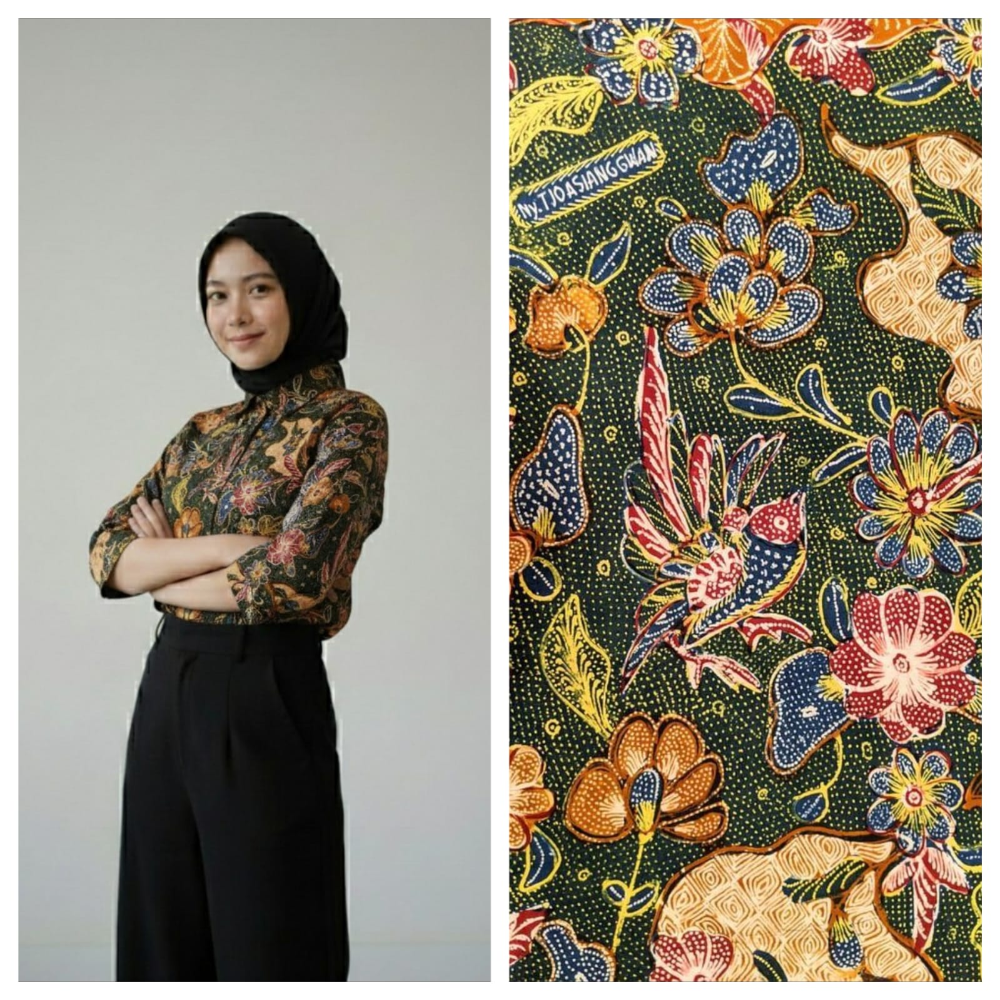
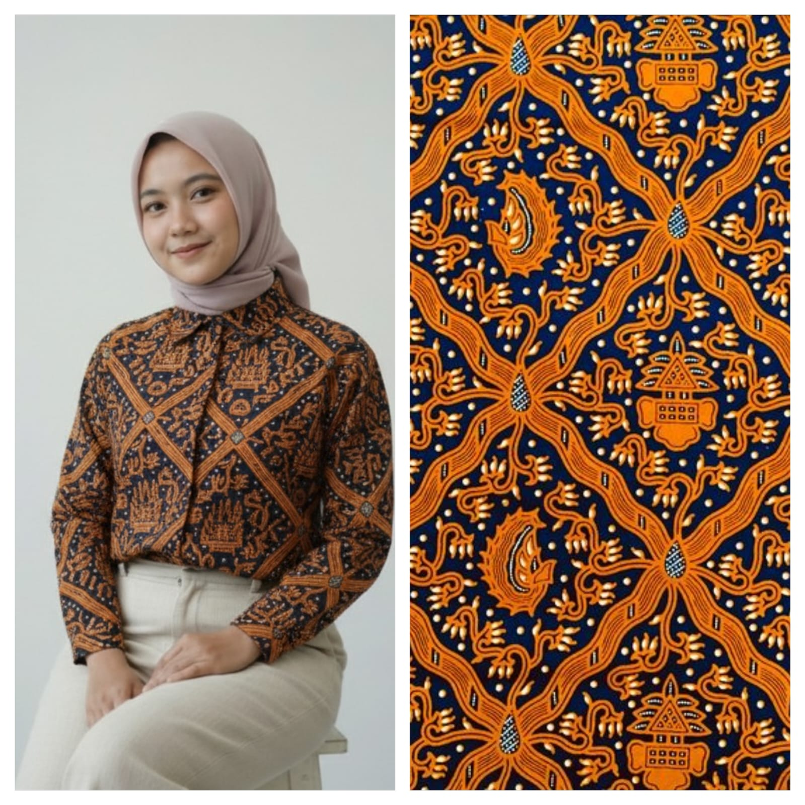
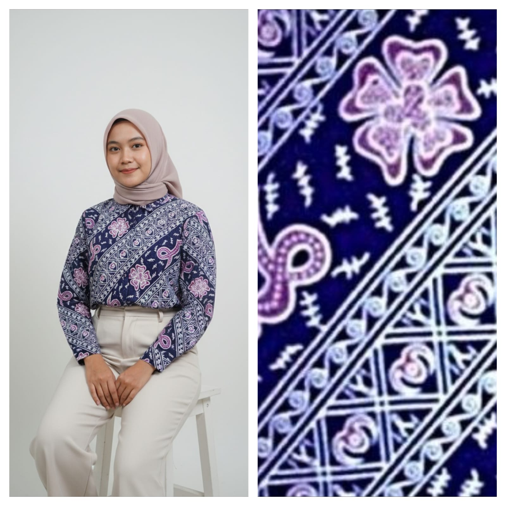
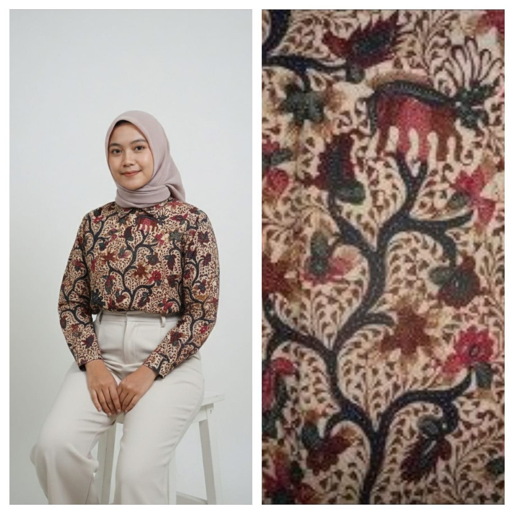

Setiap motif batik menyimpan cerita dan filosofi mendalam dari berbagai penjuru Nusantara

Melambangkan cinta yang tumbuh kembali. Motif ini sering digunakan dalam upacara pernikahan sebagai simbol kasih sayang yang tak pernah padam.

Dengan warna coklat klasik yang elegan, Sogan merupakan batik tertua yang mencerminkan kesederhanaan dan kebijaksanaan leluhur Jawa.

Masterpiece kolaborasi tiga kota: Pekalongan, Lasem, dan Solo. Proses pembuatannya yang kompleks menghasilkan perpaduan warna yang memukau.

Motif klasik yang melambangkan keluhuran budi pekerti dan harapan baik. Sering dikenakan dalam acara-acara penting sebagai doa keselamatan.

Unik dengan ornamen kaligrafi Arab, batik ini memadukan unsur Islam dengan tradisi lokal Bengkulu, menciptakan identitas budaya yang khas.

Batik cap dengan teknik celup warna menggunakan gentong. Warna-warna natural menghasilkan corak yang ramah lingkungan dan artistik.
Asal: Region
Jenis: Batik Klasik
Description
Philosophy text here